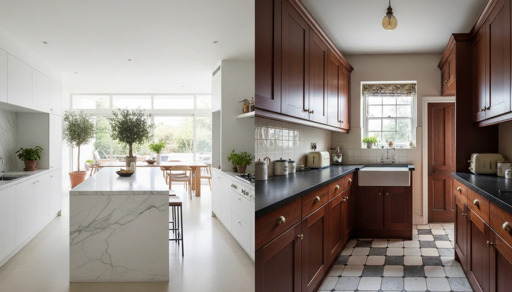
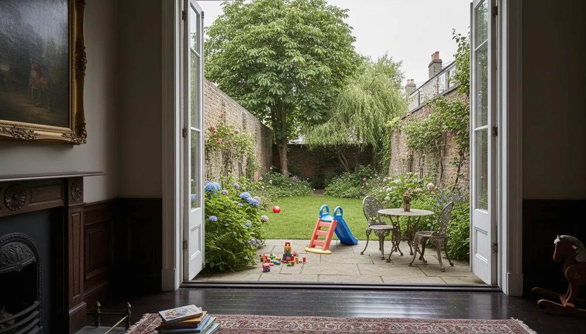

איך ישראלים ובריטים חושבים אחרת על בית
אני זוכרת את הרגע שנכנסתי לדירה הראשונה שלי בלונדון. היה אפור בחוץ, מן הסתם, והדירה הייתה חשוכה. לא חשוכה-צריך-לתקן. חשוכה-ככה-זה-פה. הלכתי לחלון, ניסיתי לפתוח אותו, והחלון זז כלפי מעלה. לא הבנתי מה קורה. אחרי יותר מעשרים שנה בלונדון, אני יכולה להגיד לכם - ההבדל בין הבית הישראלי לבריטי הוא לא עניין של טעם. זה הבדל תרבותי עמוק שמשפיע על כל החלטה שתקבלו כשתבואו לשפץ דירה בלונדון.
אור - מה שישראלים לא מבינים על לונדון
הדבר הראשון שישראלים אומרים כשהם נכנסים לדירה בלונדון: "למה פה חשוך?" ובצדק. ישראלים מתוכננים לאור. הבתים שלנו בנויים סביב חלונות גדולים, מרפסות פתוחות, קירות לבנים. הכל מכוון לקלוט כמה שיותר שמש.
בלונדון זה הפוך. הבתים הוויקטוריאניים נבנו עם חלונות sash windows - חלונות הזזה אנכיים, גבוהים וצרים. הם לא נועדו להציף את הבית באור. הם נועדו לאוורר, לתת כמות מבוקרת של אור, ולשמור על פרטיות מהרחוב. ב-1851 ביטלו באנגליה את מס החלונות, ואז סוף סוף אפשר היה לשים חלונות גדולים יותר - אבל הגישה הבסיסית נשארה.
ואז יש את הכיוון. חצי מהדירות בלונדון פונות צפונה. בישראל זה אסון. בלונדון זה אור רך, עקבי, בלי סנוור. צלמים אוהבים את זה. מעצבי פנים אוהבים את זה. ישראלים? ישראלים רוצים שמש, ושמש הם לא יקבלו.
מה שכן - האור בלונדון יפה. הוא לא אור של תל אביב, אבל הוא דרמטי. הוא משתנה לאורך היום בצורה שאין בישראל. וכשלומדים לעצב סביב האור הזה במקום להילחם בו, הדירה הופכת למשהו אחר לגמרי.
open plan - למה בריטים לא אוהבים את זה כמונו
בישראל, כשנכנסים לדירה ישנה, הדבר הראשון שעושים - הורסים קירות. open plan זה ברירת מחדל. סלון-מטבח-פינת אוכל - הכל ביחד, הכל פתוח, הכל זורם.
בריטים חושבים אחרת. הבית הוויקטוריאני תוכנן סביב הפרדה. חדר אורחים, חדר עבודה, מטבח, חדר אוכל - כל אחד עם דלת, כל אחד עם תפקיד. המסדרון הוויקטוריאני הומצא בדיוק בשביל זה - כדי שלא תצטרכו לעבור דרך חדר אחד כדי להגיע לשני. פרטיות, לא זרימה.
ומעניין - בשנים האחרונות בריטניה דווקא זזה בחזרה מ-open plan. אחרי שנים שבהן כולם פתחו הכל, אנשים מגלים שהם צריכים דלת שאפשר לסגור. חדר שאפשר לעבוד בו בשקט. מטבח שאפשר לבשל בו בלי שהריח מגיע לכל מקום.
הפתרון לישראלים בלונדון הוא לא לפתוח הכל ולא להשאיר הכל סגור. זה לעשות מה שהבריטים קוראים "broken plan" - חללים מחוברים אבל עם אפשרות להפריד. קשת במקום דלת, מפלס שמשתנה, רהיט שמחלק חלל. ככה אתם מקבלים את הפתיחות הישראלית בלי לאבד את היתרונות של בית שיש בו חדרים. וכשצריך אישור תכנון להורדת קיר - שווה לחשוב פעמיים אם באמת צריך.
המטבח - לב הבית או חדר שירות?
בישראל המטבח הוא לב הבית. הילדים עושים שם שיעורי בית, האורחים יושבים שם עם כוס יין, ארוחת שישי מתחילה ומסתיימת שם. המטבח הישראלי עובד קשה - הוא חייב להכיל אחסון רציני, לעמוד בבישול כבד, ולהתנקות בקלות.
המטבח הבריטי המסורתי? חדר שירות. ממש. בבתים ויקטוריאניים המטבח היה במרתף או בחלק האחורי של הבית, מופרד מחדרי המגורים. אף אחד לא ציפה שתבלו שם זמן. גם היום, בדירות לונדוניות רבות, המטבח הוא חדר קטן, צר, עם דלת - לא חלל משפחתי.

זה אחד ההבדלים שהכי מרגישים. ישראלים שקונים דירה בלונדון ומגלים מטבח של שלושה מטר על שניים - נכנסים להלם. "אי אפשר לבשל פה," הם אומרים. "אי אפשר לאכול פה." וצריך להגיד להם - נכון. המטבח הזה לא תוכנן בשביל הדרך שאתם חיים. אם המשפחה מגיעה לשלושה שבועות באוגוסט, המטבח צריך שדרוג רציני. לפעמים זה השיפוץ הכי חשוב בכל הפרויקט.
גינה, מרפסת, חלל חיצוני - סדרי עדיפויות הפוכים
בישראל יש מרפסת. אולי גם גינה. אבל החלל החיצוני הוא בונוס, לא צורך. יש פארקים, יש חוף, יש 300 ימי שמש בשנה. מי צריך גינה?
בלונדון? הגינה היא הכל. בסקרים, יותר מחצי מהבריטים אומרים שגינה היא הדבר הכי חשוב כשהם בוחרים בית. וזה לא סתם העדפה - זה משפיע על מחירים. garden flat בלונדון שווה יותר מדירה זהה בלי גישה לגינה. לפי נתוני שוק הנדל"ן, חלל חיצוני פרטי בלונדון יכול להוסיף עשרות אלפי פאונד לערך הנכס - ובמרכז לונדון הפרמיה יכולה להגיע ל-34%.

ישראלים צריכים להבין את זה. כשאתם מסתכלים על דירה בלונדון ויש גינה - זה לא "נחמד שיש." זה אחד הנכסים הכי יקרים של הדירה. וכשהילדים שלכם בלונדון לחופשת קיץ, הגינה הזאת הופכת לחצר המשחקים שלהם. בלונדון אין מרפסת שמרחיבה את הסלון כמו בישראל. הגינה היא החלל החיצוני - וצריך להתייחס אליה ברצינות. במיוחד בשכונות שישראלים קונים בהן, גינה פרטית היא יתרון שלא מוותרים עליו.
חומרים - לבנים, אבן, עץ מול טיח ושיש
בישראל בונים עם בטון, טיח ושיש. הקירות חלקים ולבנים. הרצפה קלה לניקוי. ספונג'ה בשישי בבוקר זה טקס. הכל מתוכנן לתחזוקה קלה, לחום, ולחיים שבהם ילדים רצים בבית עם נעליים.
בלונדון? לבנים מבחוץ, עץ מבפנים. רצפות עץ. שטיחים - כן, שטיחים, על הרצפה, בכל החדרים. פנלים של עץ על הקירות. אבני גיר. ו-period features - קרניזים, אח, רוזטות בתקרה - שאסור לגעת בהם אם אתם ב-conservation area.
| נושא | ישראל | לונדון |
|---|---|---|
| רצפות | שיש, אריחים, קל לניקוי | עץ, שטיחים, לא סובלים מים |
| קירות חיצוניים | בטון וטיח | לבנים ואבן |
| קירות פנימיים | טיח חלק, לבן | פנלים, קרניזים, period features |
| תחזוקה | ספונג'ה, מים, פשוט | יבש, זהיר, שונה לגמרי |
ישראלים מגיעים ורוצים לפרק הכל. להחליף את הרצפה, להוריד את השטיחים, לשים שיש. ולפעמים זו טעות. הפרקט הוויקטוריאני, אם הוא מקורי ובמצב טוב, שווה יותר מכל שיש. הבריטים יודעים את זה - ולכן הם שומרים. ואם הנכס שלכם הוא listed building, אתם בכלל לא יכולים להחליף מה שאתם רוצים.
לגבי הספונג'ה - תשכחו מזה. רצפות עץ לא סובלות מים. שטיחים לא סובלים מים. הדרך שישראלים מנקים בית היא לא הדרך שמנקים בית בלונדון. וכן, בבתים הרבה יותר קר - לכן underfloor heating הפך למשהו שישראלים בלונדון מבקשים כמעט תמיד.
פרטיות וגבולות - הבית הבריטי כמבצר
בישראל הדלת פתוחה. השכנים שומעים מה קורה. הילדים משחקים בחדר מדרגות. יש רעש, יש חיים, יש חוסר גבולות נעים שהוא חלק מהחוויה.
בלונדון הבית הוא מבצר. גדר בגינה, וילון ברשת בחלון, דלת סגורה. הבריטים לא מסתכלים לשכנים בצלחת. הם לא שואלים כמה שילמתם. הם שומרים מרחק - ואת הבית שלהם הם שומרים לעצמם.
זה בא לידי ביטוי בעיצוב. בבתים ויקטוריאניים כל חדר היה סגור. דלת למטבח, דלת לסלון, דלת לחדר האוכל. וגם היום, גם בדירות מודרניות, יש הרבה יותר דלתות בבית בריטי מאשר בבית ישראלי.
ישראלים צריכים להחליט מה הם רוצים - הפתיחות הישראלית או הפרטיות הבריטית. והאמת? אם הדירה משמשת גם לסופי שבוע של הזוג בלבד וגם לשלושה שבועות עם ארבעה ילדים - אתם צריכים גם וגם. חדרים שנסגרים כשצריך. חלל שנפתח כשרוצים. ניהול נכון של התכנון מישראל עושה את ההבדל.
מה עושים עם ההבדלים האלה
לא נלחמים בבניין. בית ויקטוריאני הוא לא דירה בתל אביב ולא צריך להיות. הקירות עבים, החלונות גבוהים, האור רך, והגינה ירוקה. זה לא פחות טוב - זה אחר.
הבתים הכי מוצלחים שעיצבתי לישראלים בלונדון הם אלה שמכבדים את המעטפת הבריטית אבל מכניסים לתוכה חיים ישראליים. מטבח גדול ופתוח לאירוח, בתוך בית שיש בו גם חדרים עם דלת. רצפות עץ מחודשות, לא שיש. אור נוסף במקומות הנכונים, לא ניסיון להפוך את לונדון לתל אביב.
ואם מבקשים ממני עצה אחת - אל תנסו להפוך את הדירה למשהו שהיא לא. תנו לבניין להיות בריטי. תנו לחיים בפנים להיות ישראליים. ההבדל הזה, אם עושים אותו נכון, הוא בדיוק מה שהופך בית שני בלונדון למקום ששווה לחזור אליו. תראו איך קבלנים בריטים עובדים עם הגישה הזאת - ותבינו למה שווה לעבוד עם מישהי שמכירה את שני העולמות.